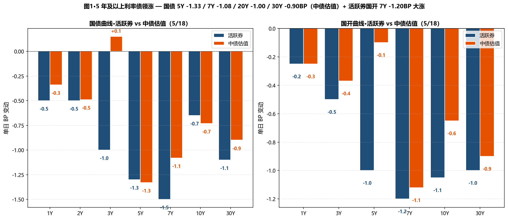
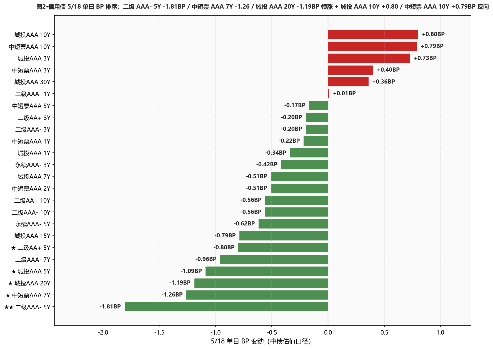
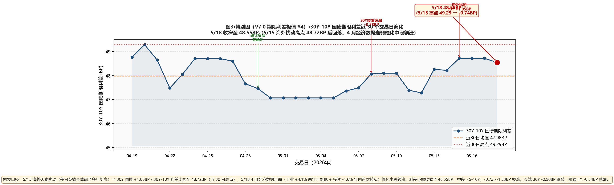

市场定性 4 月经济数据走弱催化 + 5Y 以上利率债领涨 + 信用债 5Y 领涨 / 10Y 反向 + 海外背离+基本面背离—— 4 月规模以上工业增加值 +4.1%（创逾两年半新低）+ 1-4 月固定资产投资 -1.6%（年内首次转负）—— 经济数据明显走弱、为债市提供基本面支撑； 中段+长端利率债领涨：国债 5Y -1.33 / 7Y -1.08 / 10Y -0.73 / 15Y -0.87 / 20Y -1.00 / 30Y -0.90BP（修复 5/15 海外扰动的调整）； 国债 1Y -0.34BP（短端 5/8 累计 +1.95BP 上行后首次修复）/ 2Y -0.49BP； 国开债 5-10Y 大涨：5Y -0.10 / 7Y -1.12 / 10Y -0.65 / 30Y -0.90BP； 信用债 5Y 领涨：★★ 二级 AAA- 5Y -1.81BP（信用债 5/18 单日最强）/ 中短票 AAA 7Y -1.26BP / 城投 AAA 20Y -1.19BP / 中短票 AA+ 5Y -0.80BP / 城投 AAA 5Y -1.09BP / 城投 AAA 15Y -0.79BP / 二级 AA+ 5Y -0.80BP； 但信用债 3Y 短端微反向：城投 AAA 3Y +0.73 / 中短票 AAA 3Y +0.40 / 中短票 AAA 10Y +0.79 / 城投 AAA 10Y +0.80BP（W2026-20 周累计 3Y 大涨 -3.86BP 后部分回吐）；10Y 隐含税率从 6.16BP 微升至 6.24BP（+0.08BP）；30Y-10Y 国债期限利差从 48.72BP 收窄至 48.55BP（-0.17BP）。 海外因素继续扰动 — 全球债券市场新一轮重定价、美日英德长债收益率多年新高、中美 10Y 国债负利差创近一年最大；交易员提示"中期风险也在积累、央行仍在回收中长期流动性"。
- ✅ 30Y 国债建仓浮亏修复 — 5/18 -0.90BP 大涨本行 4/29 建仓 30Y 国债 3pct（中债 2.2190%）；5/15 浮亏 +3.40BP；5/18 中债 2.2440%、浮亏收窄至 +2.50BP（5/18 -0.90BP 大涨）；活跃券 2.2445%（距 2.23% 上方 1.45BP）；维持仓位不补不止、等 5/19 LPR + 经济数据走弱的持续性
- ✅ 二级 AAA- 5Y 加仓策略再次命中5/18 二级 AAA- 5Y -1.81BP（信用债 5/18 单日最强）；W2026-20 周累计 -2.32BP；本行 5Y 二级 28-30% 维持；7Y/10Y 5/13 加仓位也维持；不再加仓、节奏维持、关注 5/19 LPR 后是否进一步加仓
- ✅ 5-7Y 国开持续走强5/18 国开 7Y -1.12 / 10Y -0.65 / 5Y -0.10BP；W2026-20 周累计国开 5-7Y -1.88~-3.28BP；隐含税率 6.24BP（+0.08BP 微升）；维持 3pct（已切换至 7Y）不增仓、等回升至 8-10BP 区间再加仓
- ⚠️ 信用债 3Y 短端微反向 + 10Y 反向上行 — 配置盘空间收缩5/18 城投 AAA 3Y +0.73 / 中短票 AAA 3Y +0.40BP（W2026-20 周累计 -3~-4BP 大爆发后回吐）+ 城投 AAA 10Y +0.80 / 中短票 AAA 10Y +0.79BP（10Y 持续反向上行）；这是"配置盘空间收缩"信号 — 信用债二级永续大爆发后、上周末/本周起部分品种已进入压缩极值；保持现仓不主动加仓
- ⚠️ 杠杆 105-108% 维持、等 5/19 LPR + 海外扰动延续性R-DR007 3.03BP / R-DR001 3.19BP（仍温和分层、未完全消失）；DR001 距 OMO -13.41BP（DR001 仍处低位）；不主动上调至 110%、等 5/19 LPR + 海外因素扰动是否持续；交易员提示"中期风险在积累、短期资金供给充裕却价格坚挺、令短券预期不太乐观"
- ① 30Y国债 vs 2.23% ⚠️ 仍上方：活跃券 2.2445%（上方 1.45BP）/ 中债估值 2.2440%（上方 1.40BP）→5/18 大涨修复但仍上方阻力位、关注 5/19 LPR 信号
- ② 10Y国债 vs 1.75% ⚠️ 双口径已突破下方：活跃券 1.7465%（下方 0.35BP）/ 中债估值 1.7585%（上方 0.85BP）→活跃券已重新跌破、中债估值距阈值仅 +0.85BP；若 5/19 中债估值跌破、可加仓 10Y 国债 2pct
- ③ R-DR007 利差 >15BP ○ 未触发：当前 3.03BP（仍温和分层 1.50-5BP 区间）→维持 105-108% 杠杆
- ④ 10Y中短票AAA-3Y 利差 ≤25BP ○ 未触发：当前 49.49BP（+0.39BP）、距阈值 24.49BP→10Y/3Y 反向走阔
- ⑤ 30Y-10Y 城投AAA 利差 ≤25BP ○ 未触发：当前 28.00BP（-0.44BP）、距阈值 3.00BP→城投 30Y +0.36 vs 10Y +0.80BP 反向、距 25BP 目标 3.00BP
A 段·详细数据
① 资金面 Wind EDB API + Wind 综述 PDF
资金面较为充裕——DR001 +0.13BP 至 1.2659%（PDF "微幅上行并徘徊于 1.26% 附近"、距 OMO -13.41BP）；DR007 -0.97BP 至 1.3283%（距 OMO -7.17BP）；R001 +0.69BP 至 1.2978% / R007 -0.21BP 至 1.3586%；R-DR007 3.03BP / R-DR001 3.19BP（温和分层）；DR007-DR001 点差 6.24BP；NCD AAA 1Y -0.25BP 至 1.4450% / 3M -0.00BP 至 1.3525%。央行 5/18 10亿 7天 + 10亿到期、单日完全对冲；同时开展 2026 年中央国库现金管理商业银行定期存款操作（1 个月 700 亿 + 21D 300 亿）。非银抵押报价 1.3%-1.35%。交易员评："尽管有 8000 亿元买断式逆回购错位到期、央行对中长期流动性的净回笼加力、但银行间自发式宽松形成的资金水位很高、后续关注税期等影响"；机构指出"国家税务总局信息显示本月 22 日为申报缴纳增值税/消费税/个人所得税等主要税种的纳税申报截止日、一般随后两个工作日为缴税款走款高峰"。
| 指标 | 5/15 | 5/18 | BP |
|---|---|---|---|
| DR001 (%) | 1.2646 | 1.2659 | +0.13BP |
| DR007 (%) | 1.3186 | 1.3283 | +0.97BP |
| R001 (%) | 1.2909 | 1.2978 | +0.69BP |
| R007 (%) | 1.3565 | 1.3586 | +0.21BP |
| NCD AAA 1Y (%) | 1.4425 | 1.4450 | +0.25BP |
| NCD AAA 3M (%) | 1.3525 | 1.3525 | +0.00BP |
② 利率债 — 中债估值 中债估值 xlsx
呈现"5Y 及以上中段+长端全面领涨 + 国债 1Y 短端修复 + 3Y 微反向"格局：国债曲线 5-30Y 全段大涨 — 5Y -1.33 / 7Y -1.08 / 10Y -0.73 / 15Y -0.87 / 20Y -1.00 / 30Y -0.90BP（PDF "5 年及以上期限利率债表现明显占优"，5Y -1.33BP 是国债曲线最强）；国债 1Y -0.34BP 短端首次修复（5/8-5/15 周累计 +1.95BP 后修正）/ 2Y -0.49BP；仅 国债 3Y +0.00BP 微反向（3Y 修正？实际数据 +0.15BP 微小反向）；国开债曲线 5-30Y 大涨 — 5Y -0.10 / 7Y -1.12 / 10Y -0.65 / 30Y -0.90BP；3Y -0.37 / 1Y -0.25BP；10Y 隐含税率从 6.16BP 微升至 6.24BP（+0.08BP）— 仍处近 30 日低位；30Y-10Y 国债期限利差从 48.72BP 微收至 48.55BP（-0.17BP）。
| 品种 | 5/15 (%) | 5/18 (%) | BP |
|---|---|---|---|
| 国债 1Y | 1.2066 | 1.2032 | -0.34BP |
| 国债 2Y | 1.2733 | 1.2684 | -0.49BP |
| 国债 3Y | 1.2917 | 1.2932 | +0.15BP |
| 国债 5Y | 1.4703 | 1.4570 | -1.33BP |
| 国债 7Y | 1.6229 | 1.6121 | -1.08BP |
| 国债 10Y | 1.7658 | 1.7585 | -0.73BP |
| 国债 15Y | 2.0857 | 2.0770 | -0.87BP |
| 国债 20Y | 2.2650 | 2.2550 | -1.00BP |
| 国债 30Y | 2.2530 | 2.2440 | -0.90BP |
| 国开 1Y | 1.3663 | 1.3638 | -0.25BP |
| 国开 3Y | 1.5069 | 1.5032 | -0.37BP |
| 国开 5Y | 1.6055 | 1.6045 | -0.10BP |
| 国开 7Y | 1.7634 | 1.7522 | -1.12BP |
| 国开 10Y | 1.8274 | 1.8209 | -0.65BP |
| 国开 30Y | 2.3762 | 2.3672 | -0.90BP |
③ 利率债 — 活跃券 DM 查债通 + Wind 综述
活跃券呈现"5-10Y 国开 7Y -1.20BP 领涨 + 30Y 国债大幅修复 -1.10BP + 短端温和下行"格局：30Y 国债 "26超长特别国债02" PDF -0.95BP 报 2.2460%（DM 综合 -1.10BP 报 2.2445%、距 2.23% 上方 1.45BP）/ 10Y 国债 "26附息国债05" PDF -0.60BP 报 1.7470%（DM 综合 -0.65BP 报 1.7465%、距 1.75% 下方 0.35BP，活跃券已重新跌破阈值！）/ 10Y 国开 "25国开20" PDF -1.10BP 报 1.8250%；国开债活跃券 3-10Y 全段下行 -0.50~-1.20BP，7Y -1.20BP 单日最强；国债期货主力合约全线上涨 — 30Y 主连 +0.08% 报 112.800 / 10Y +0.09% 报 108.960 / 5Y +0.07% 报 106.465 / 2Y +0.03% 报 102.648。一级市场：农发行 3Y/5Y/10Y 中标 1.4442%/1.5291%/1.7994%、全场倍数 6.54/4.66/5.53、边际倍数 4.08/1.69/33.88（10Y 边际 33.88 极其惊人！显示长端配置盘大规模追入）；机构认购需求充足。
| 品种 | 5/18 收盘 (%) | BP |
|---|---|---|
| 国债 1Y | 1.1900 | -0.50BP |
| 国债 3Y | 1.3750 | -1.00BP |
| 国债 5Y | 1.5300 | -1.30BP |
| 国债 7Y | 1.6000 | -1.50BP |
| 国债 10Y (26附息国债05 PDF -0.60 报 1.7470) | 1.7465 | -0.65BP |
| 国债 30Y (26超长特别国债02 PDF -0.95 报 2.2460) | 2.2445 | -1.10BP |
| 国开 5Y | 1.5600 | -1.00BP |
| 国开 7Y | 1.7780 | -1.20BP |
| 国开 10Y (25国开20 PDF -1.10 报 1.8250) | 1.8255 | -1.05BP |
| 国开 30Y | 2.0825 | -1.00BP |
④ 信用债 — 中债估值 中债估值 xlsx
呈现"5Y/7Y 中段 + 城投 20Y 长端领涨 + 3Y/10Y 反向上行"分化： ★★ 二级 AAA- 5Y -1.81BP（信用债 5/18 单日最强、上周二 AAA- 10Y 双 -2.14BP 后本周由 5Y 接棒领涨）/ 中短票 AAA 7Y -1.26BP / 中短票 AA+ 5Y -0.80BP / 城投 AAA 20Y -1.19BP / 城投 AAA 5Y -1.09BP / 城投 AAA 15Y -0.79BP / 二级 AA+ 5Y -0.80BP； 二级 AAA- 7Y -0.96 / 10Y -0.56BP 跟随下行；永续 AAA- 3Y -0.42 / 5Y -0.62BP； ★ 中短票 AAA 10Y +0.79 / 城投 AAA 10Y +0.80 / 城投 AAA 3Y +0.73 / 中短票 AAA 3Y +0.40 / 中短票 AA+ 3Y +0.40BP 反向上行（与上周末/本周一信用债大爆发后部分品种回吐有关）； 城投 AAA 30Y +0.36BP / 7Y -0.51BP / 1Y -0.34BP — 中段大涨、短长端微幅分化； 配置盘呈现"5Y/7Y 中段领涨 + 信用债 10Y 微反向"切换格局 — 表明信用债 10Y 已接近压缩极值、市场买盘开始向 5Y/7Y 转移。
| 品种 | 5/15 (%) | 5/18 (%) | BP |
|---|---|---|---|
| 中短票AAA 1Y | 1.4952 | 1.4930 | -0.22BP |
| 中短票AAA 3Y | 1.6960 | 1.7000 | +0.40BP |
| 中短票AAA 5Y | 1.8548 | 1.8531 | -0.17BP |
| ★ 中短票AAA 7Y | 2.0388 | 2.0262 | -1.26BP |
| ★ 中短票AAA 10Y | 2.1870 | 2.1949 | +0.79BP |
| 城投AAA 1Y | 1.5037 | 1.5003 | -0.34BP |
| ★ 城投AAA 3Y | 1.7032 | 1.7105 | +0.73BP |
| ★ 城投AAA 5Y | 1.8438 | 1.8329 | -1.09BP |
| 城投AAA 7Y | 2.0361 | 2.0310 | -0.51BP |
| ★ 城投AAA 10Y | 2.2395 | 2.2475 | +0.80BP |
| 城投AAA 15Y | 2.3436 | 2.3357 | -0.79BP |
| ★ 城投AAA 20Y | 2.4742 | 2.4623 | -1.19BP |
| 城投AAA 30Y | 2.5239 | 2.5275 | +0.36BP |
| 二级AAA- 1Y | 1.5168 | 1.5169 | +0.01BP |
| 二级AAA- 3Y | 1.7521 | 1.7501 | -0.20BP |
| ★★ 二级AAA- 5Y | 1.9464 | 1.9283 | -1.81BP |
| 二级AAA- 7Y | 2.1365 | 2.1269 | -0.96BP |
| 二级AAA- 10Y | 2.2477 | 2.2421 | -0.56BP |
| 二级AA+ 3Y | 1.7636 | 1.7616 | -0.20BP |
| ★ 二级AA+ 5Y | 1.9743 | 1.9663 | -0.80BP |
| 二级AA+ 10Y | 2.2600 | 2.2544 | -0.56BP |
| 永续AAA- 3Y | 1.7719 | 1.7677 | -0.42BP |
| 永续AAA- 5Y | 1.9666 | 1.9604 | -0.62BP |
B 段·今日关键事件
① 4 月经济数据走弱 — 工业 +4.1% 两年半新低 + 投资 -1.6% 年内首次转负：规模以上工业增加值同比 +4.1%（创逾两年半新低）/ 1-4 月固定资产投资同比 -1.6%（年内首次转负）；经济数据明显走弱、为债市提供基本面支撑、催化 5Y 以上利率债领涨。
② 海外背离 — 中美 10 年国债负利差创近一年最大：海外方面、中美债市走向背道而驰、中美 10 年国债负利差创近一年来最大；全球债券市场经历新一轮剧烈重定价、美日英德长债收益率飙至多年新高（5/15 已显现）；A 股海外市场明显调整、A 股多头也暂时停下攻势、上证 -0.09% 报 4131.53、量能明显缩减（2.92 万亿 vs 上日 3.37 万亿）。
③ 央行 10 亿 7 天 + 国库现金管理 1000 亿 — 中长期流动性净回笼：央行 5/18 开展 10 亿元 7 天逆回购 + 10 亿到期、单日完全对冲；同时开展 2026 年中央国库现金管理商业银行定期存款 7 期（1 个月）700 亿（中标 1.68%、较上期 -1BP）+ 8 期（21 天）300 亿；交易员评"尽管有 8000 亿买断式逆回购错位到期、央行对中长期流动性净回笼加力、但银行间自发式宽松形成的资金水位很高、后续关注税期等影响"。
④ 一级农发行 3Y/5Y/10Y 大量发行 — 10Y 边际倍数 33.88 极其惊人：农发行 3Y/5Y/10Y 中标收益率 1.4442%/1.5291%/1.7994%、全场倍数 6.54/4.66/5.53、边际倍数 4.08/1.69/33.88—— 10Y 边际倍数 33.88 表明长端配置盘大规模追入、机构认购需求充足；但 5Y 边际 1.69 偏弱、配置不均。
⑤ 银行 "二永债" 收益率多数下行 + 信用债二级永续板块第六日领涨：银行 "二永债" 收益率多数下行 — "26中行二级资本债 01BC"、"26工行二级资本债 01BC" 收益率下行超 2bp；二级 AAA- 5Y -1.81BP 是信用债 5/18 单日最强；本行 5Y 二级 28-30% 仓位 + 7Y/10Y 5/13 加仓继续兑现。
⑥ 卖方观点 — 华泰固收"近期债市出现两组显著背离"：华泰固收称："近期债市出现两组显著背离：一是中债与海外债市走势背离、二是债市与基本面背离；两者看似不同、实则共享同一底层逻辑：国内新旧动能切换、经济增长到融资需求再到利率的传导链条不同以往；市场更关注经济结构而非总量变化；中外货币政策预期错位、国内资金持续宽松；中美 AI 融资模式差异也带来结构性影响；背离何时以何种方式结束：短期看资金面边际变化是关键、中期则取决于经济内生动能与融资需求修复"。
C 段·重点可视化（V7.0 固定2张+动态1张）

图1·5 年及以上利率债领涨 — 国债 5Y -1.33 / 7Y -1.08 / 20Y -1.00 / 30Y -0.90BP（中债估值）+ 活跃券国开 7Y -1.20BP 大涨

图2·信用债 5/18 单日 BP 排序：二级 AAA- 5Y -1.81BP / 中短票 AAA 7Y -1.26 / 城投 AAA 20Y -1.19BP 领涨 + 城投 AAA 10Y +0.80 / 中短票 AAA 10Y +0.79BP 反向

图3·特别图（V7.0 期限利差极值 #4）·30Y-10Y 国债期限利差近 30 个交易日演化 — 5/18 收窄至 48.55BP（5/15 海外扰动高点 48.72BP 后回落、4 月经济数据走弱催化中段领涨）